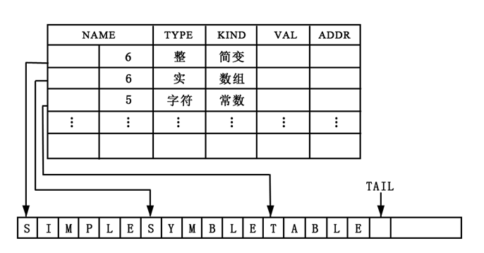
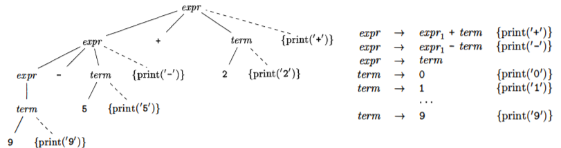

1. introduction
1. 语义翻译概述
在编译的过程中，语义翻译包含 语义分析 和 中间代码生成 (
(1). 语义分析
 语义分析阶段主要任务如下：
- 收集标识符的属性信息, 并存于符号表中, 例:
- 种属 (
kind ): 例如变量名、数组名、过程名 - 类型
- 存储位置、长度
- 作用域等
- 语义检查，例:
- 变量名未经声明就使用，或重复声明
- 运算分量类型不匹配
(2). 中间代码生成
中间代码生成也可以和语义分析、语法分析同时进行，它是编译器前端的过程的最后一步，负责生成交给后端处理的中间代码。底层形式的中间代码更接近于目标机器，使用机器相关的处理任务，如寄存器分配、代码优化等。本章使用到的表示形式有
- 三地址代码
- 语法结构树
2. 语法制导翻译
语法制导翻译 (
将语义规则同语法规则 (即产生式) 联系起来涉及以下两个概念。
(1). 语法制导定义
语法制导定义 (
- 将每个文法符号和一个语义属性相关联
- 将每个产生式和一组语义规则相关联
如图是通过
(2). 语法制导翻译方案
语法制导翻译方案 (

如图是通过
(3). SDD vs. SDT
在语法制导翻译中：
SDD : 是语言翻译的高层次规格说明，隐蔽了具体实现细节，例如翻译发生的顺序SDT : 可以看做是对SDD 的补充，是SDD 的具体实施方案，显式指明了计算细节
3. 三地址代码
三地址码 (
表示三地址码可用的数据结构：三元式，四元式，间接三元式。
(1). 常用的三地址指令
| 指令类型 | 指令形式 |
| 赋值 | x = y op z, x = op y |
| 复制 | x = y |
| 条件跳转 | if x relop y goto n |
| 非条件跳转 | goto n |
| 参数传递 | param x |
| 过程调用 | y = call p, n |
| 过程返回 | return x |
| 数组引用 | x = y[i] |
| 数组赋值 | x[i] = y |
| 地址及指针操作 | x = &y, x = *y, *x = y |
其中地址名可有如下三种形式:
- 源程序变量名
- 常量
- 编译器生成的中间变量名
(2). 四元式表示
一个四元式 (
- 单目运算符不使用 $\small\mathit{arg}_2$
- 类似 $\small\mathit{param}$ 的元素安抚不使用 $\small\mathit{arg}_2$ 和 $\small\mathit{result}$
- 条件或非条件转移指令将目标标号放入 $\small\mathit{result}$
| 三地址指令 | 四元式 |
| x = y op z | ( op , y , z , x ) |
| x = op y | ( op , y , _ , x ) |
| x = y | ( = , y , _ , x ) |
| if x relop y goto n | ( relop , x , y , n ) |
| goto n | ( goto , _ , _ , n ) |
| param x | (param , _ , _ , x ) |
| y = call p, n | (call , p , n , y ) |
| return x | (return , _ , _ , x ) |
| x = y[i] | ( =[] , y , i , x ) |
| x[i] = y | ( []= , y , x , i ) |
| x = &y | ( & , y , _ , x ) |
| x = *y | ( =* , y , _ , x ) |
| *x = y | ( *= , y , _ , x ) |